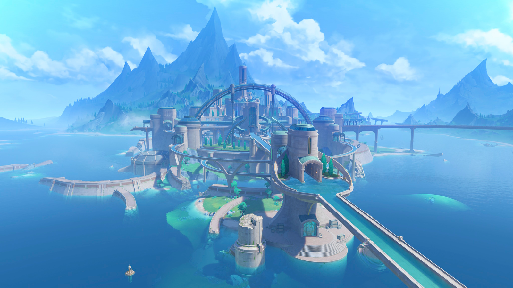
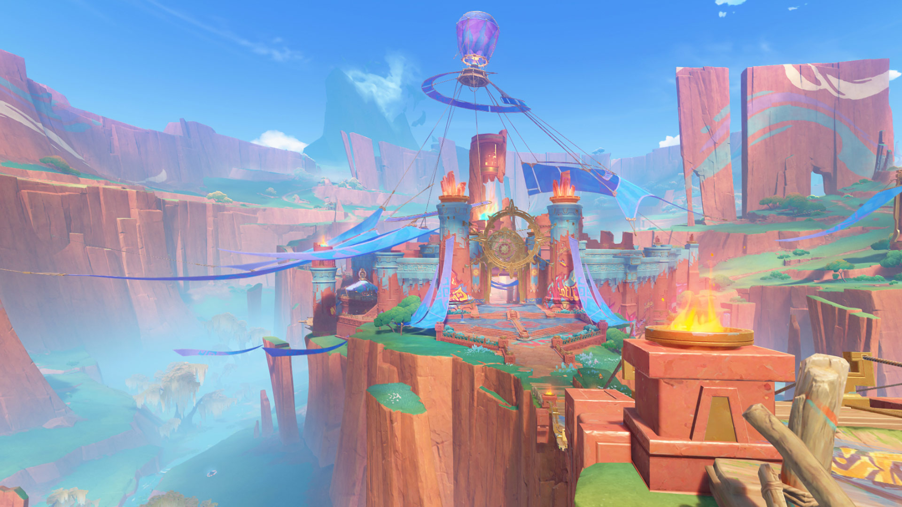

У цьому проєкті ви дізнаєтесь більше про три останні регіони Genshin Impact: Сумеру, Фонтейн та Натлан.
Тейват – це фантастичний світ у Genshin Impact, що поділений на сім регіонів, кожен з яких управляється Архонтом та відповідає певному елементу.
Більше про гру можна дізнатися на офіційному сайті Genshin Impact або нижче у плаваючому фреймі.
Кожен регіон Тейвату має свого правителя – Архонта, який є носієм Божественного Ока і керує за допомогою елемента:
| Регіон | Зображення | Архонт регіону |
|---|---|---|
| Сумеру | |
Дендро Архонт |
| Фонтейн |  | Гідро Архонт |
| Натлан |  | Піро Архонт |